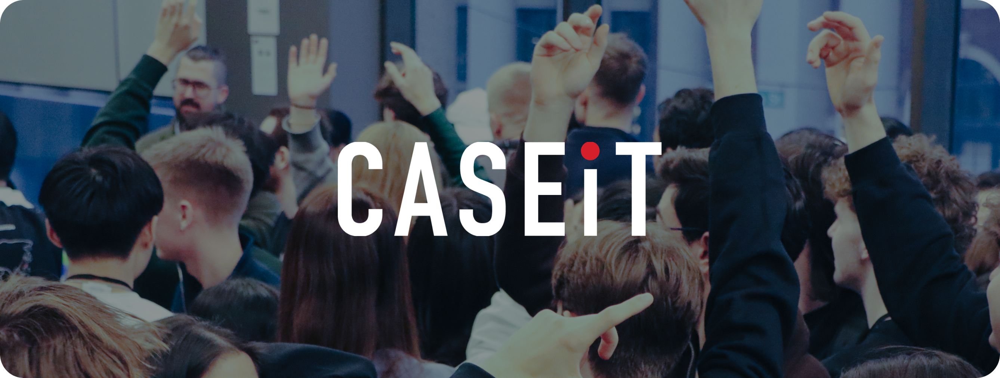
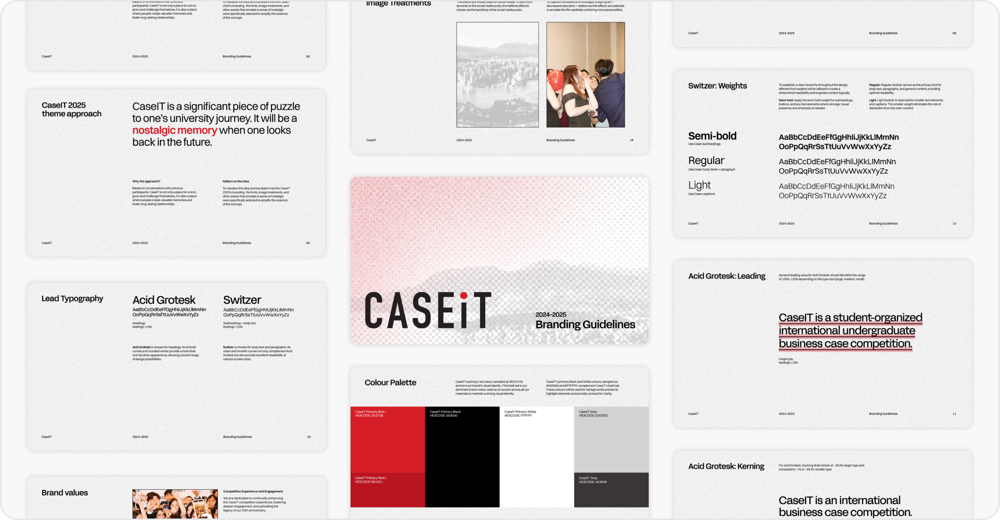
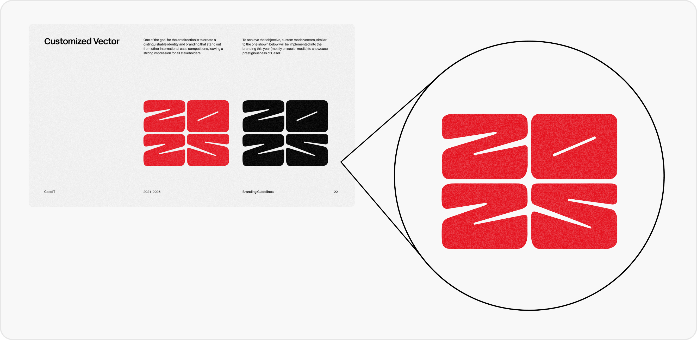
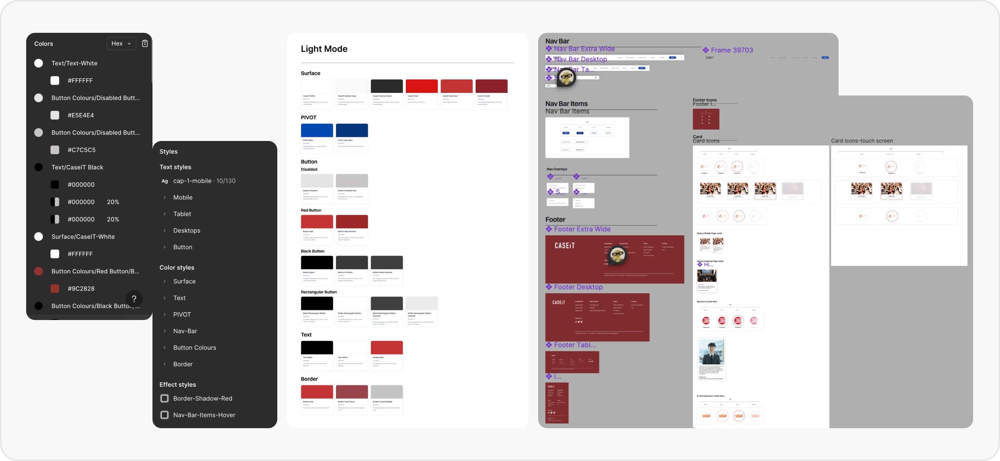
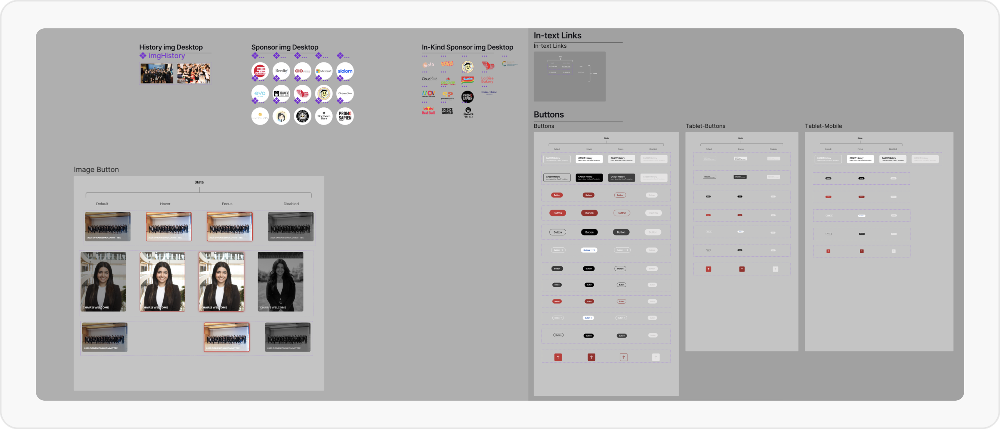
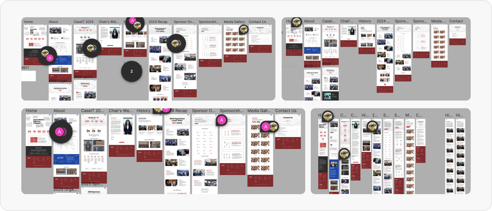

Redefining the Visual Identity of SFU’s Premier Case Competition
In July 2024, I was hired as the Director of Design for CaseIT 2025, where I led the visual identity and creative strategy to distinguish CaseIT from other case competitions and represent SFU Beedie to universities across the globe.
🚧 This case study is a work-in-progress. In the meantime, feel free to take a look at some highlights from the work I created during my year with CaseIT or reach out to learn more!
So...Who is CaseIT?
Hosted by the SFU Beedie School of Business, CaseIT is a six-day case competition that welcomes over 100 stakeholders annually for an intensive competitive experience.
Highlights of my contribution as a Director of Design
During my term, I collaborated with cross-functional teams to deliver 10+ major projects across marketing, merchandise, web, and print design, as well as creative strategy.
Increased Social Media Impression
Contributed in a 120% increase in engagement, 20% growth in user reach, and 20% increase in Instagram followers within three months.
Increase Merch Output
Expanded the merchandise lineup by four new items while achieving 15% cost savings through effective vendor coordination and negotiation.
Recognized for Thoughtful Design
Acclaimed by faculty and stakeholders for creating designs that balance creativity and functionality while delivering meaningful impact.
Recognized for Excellence in Work & Leadership
Invited to return as Vice-Chair of Marketing by the Management Team in recognition of outstanding work and leadership in project management.
At the beginning, I was tasked to propose and present a new brand identity for CaseIT 2025 within a week.
After speaking with previous team members, reviewing past branding, and comparing it to other case competitions. I learned that...
Problem #1
Conversations with previous team members revealed that the branding lacked distinction and didn’t fully capture CaseIT’s competitive essence.
Problem #2
CaseIT’s branding felt safe and conventional, presenting an opportunity to elevate it and better reflect SFU’s innovation identity.
From the findings, I want to...
Capturing the Competitive Essence
I wanted the branding to be bold while visually capturing the competition’s intensity through texture and pattern.
Distinctive Identity for CaseIT
I wanted to create a branding that sets CaseIT apart from other competitions, highlighting the school’s unique design programs and innovative spirit.
Fostering Nostalgia Through Imagery
Members noted that CaseIT fosters growth and memorable experiences, inspiring me to use imagery that highlights this essence.
Building a Toolkit to Enforce Design Consistency
I developed a branding guideline outlining typography (spacing, leading, weight), image treatments, vector usage, and the color palette. The Branding Toolkit was adopted across CaseIT to ensure all members followed the guidelines when creating assets. Below are snapshots from the toolkit.
Customized CaseIT 2025 Vector
To make the CaseIT 2025 branding more unique and personalized, I created a 2025 vector to be used across promotional items throughout the year.
The Vice-Chair of Marketing, who had already begun work on the website, onboarded me and handed off the development responsibilities.
A month into my position, I was tasked with continuing the website redesign, even though it was already halfway complete. I pushed the project further, identifying and addressing some underlying issues along the way.
Outdated Content
The content and images on the previous website were outdated and didn’t communicate CaseIT’s history, unlike other case competition websites.
Confusing Navigation
through doing a heuristic overview, The navigation felt overwhelming and unnecessarily complex, making it difficult for users to find key information.
Some of the constraints I faced
Limited change in design
Both the Management Team and faculty indicated a preference to retain the website’s overall design, avoiding major changes.
No Existing Design System to reference
Since past iterations never established a design system, I started without any existing framework to guide the redesign.
Tight Deadlines, Multiple Responsibilities
The website needed to be completed and deployed within 3 weeks, alongside many other ongoing responsibilities.s
Setting Up a Lightweight Design System for Future Use
To facilitate collaboration with the Director of Web Development and provide future members with a clear reference, I quickly established a design system. While not perfect, given the short timeframe, it was sufficient to communicate the core ideas.
 Designing Across Multiple Screen Sizes
Once onboarded as Design Coordinator, we created additional screen sizes of the website, including mobile, tablet, desktop, and extra wide, at the development team’s request. With the design system I established, the prototypes were completed quickly, and communication between design and development was smooth and efficient.
